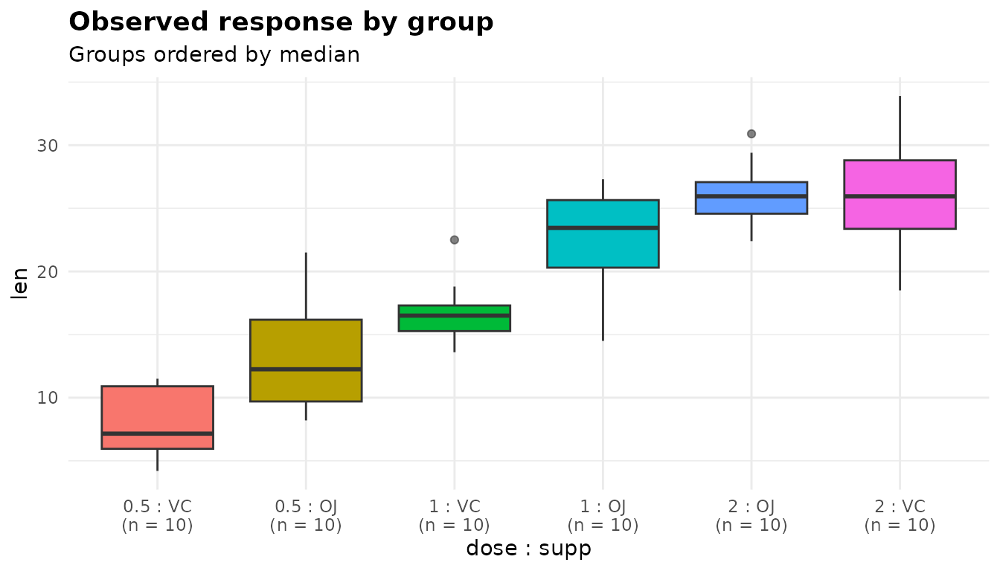
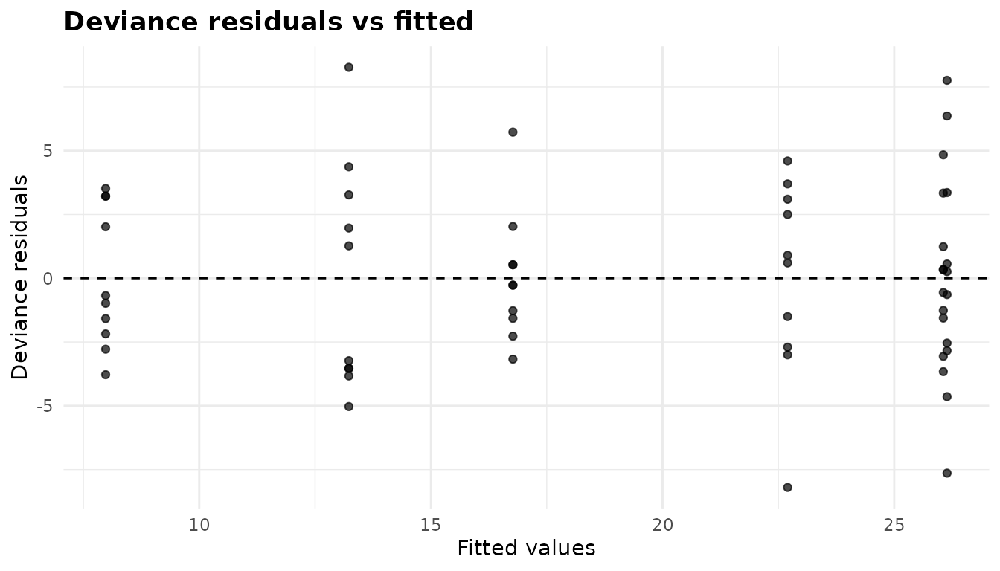
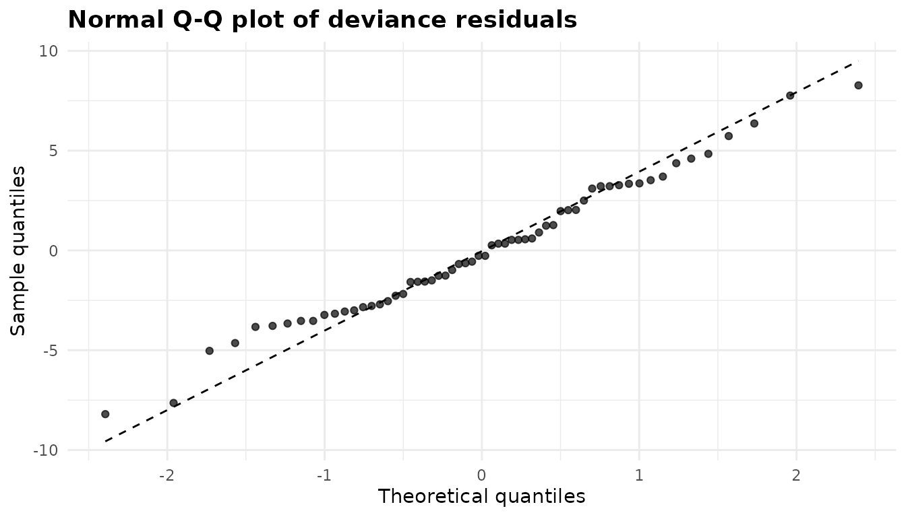

Analysis of deviance: factorial designs and non-normal responses
Source:vignettes/articles/glm.Rmd
glm.Rmdanova_glm() fits a generalised linear model of a
response on one or more grouping factors, in any family,
and reports an analysis-of-deviance table, effect sizes, estimated
marginal means and pairwise comparisons. With the default Gaussian
family it is an ordinary factorial analysis of variance. Other families
model responses whose spread changes with their mean. It is the general
tool. For a one-way comparison of means with unequal variances,
anova_welch() is better calibrated (walkthrough). For 0/1 outcomes use
anova_bin() (walkthrough), and
for counts use anova_count() (walkthrough): both add diagnostics and effect
sizes that this function does not. To adjust for a numeric covariate use
anova_ancova() (walkthrough).
The data
ToothGrowth records the length of odontoblasts (the
cells responsible for tooth growth) in 60 guinea pigs. Each animal
received vitamin C at one of three doses (0.5, 1 or 2 mg/day) by one of
two delivery methods: orange juice (OJ) or ascorbic acid
(VC). dose is stored as a number, so make it a
factor: it is a grouping variable here, with three levels.
tg <- ToothGrowth
tg$dose <- factor(tg$dose)
head(tg)
#> len supp dose
#> 1 4.2 VC 0.5
#> 2 11.5 VC 0.5
#> 3 7.3 VC 0.5
#> 4 5.8 VC 0.5
#> 5 6.4 VC 0.5
#> 6 10.0 VC 0.5
table(tg$supp, tg$dose)
#>
#> 0.5 1 2
#> OJ 10 10 10
#> VC 10 10 10
round(tapply(tg$len, list(tg$supp, tg$dose), mean), 2)
#> 0.5 1 2
#> OJ 13.23 22.70 26.06
#> VC 7.98 16.77 26.14This is a balanced 2 x 3 factorial design with ten animals per cell. The interesting question is not just whether dose and supplement matter, but whether the effect of the supplement depends on the dose. The cell means suggest it does: orange juice is ahead at the two lower doses, but not at 2 mg/day.
Fitting the model
Columns are named as character strings. With
interaction = TRUE the model contains both factors and
their interaction. Listing dose first puts it on the x axis
of the marginal-means plot.
fit <- anova_glm(tg, "len", c("dose", "supp"), interaction = TRUE)
fit
#> Analysis of deviance (gaussian family, identity link, Type II)
#> --------------------------------------------------------------
#> Call: anova_glm(data = tg, response = "len", groups = c("dose", "supp"), interaction = TRUE)
#> Observations used: 60
#>
#> Omnibus test (Type II, F)
#> term sum_sq df statistic p_value
#> 1 dose 2426.0 2 92.000 < 2.2e-16
#> 2 supp 205.3 1 15.570 0.0002312
#> 3 dose:supp 108.3 2 4.107 0.0218603
#> 4 Residuals 712.1 54 NA NA
#>
#> Plots available: box, residuals, qq, emmeans
#> (use plot(x, which = "box"))Reading the printout from the top:
- The first line names the family, the link and the type of sums of squares. A Gaussian family with the identity link is an ordinary linear model.
-
Call:records how the fit was made, andObservations used: 60says no rows were dropped. - The heading
Omnibus test (Type II, F)names the type of sums of squares and the test statistic. Both change what the numbers mean, and neither can be read off the table itself. - There is no
Notesblock, because nothing needed saying. See What the notes say. -
Plots availablelists the four plots in$plots.
summary(fit) adds the assumption checks (the dispersion
and the coefficient table), the effect sizes, the marginal means and the
pairwise comparisons.
The omnibus test
fit$anova
#> term sum_sq df statistic p_value
#> 1 dose 2426.434 2 91.999965 4.046291e-18
#> 2 supp 205.350 1 15.571979 2.311828e-04
#> 3 dose:supp 108.319 2 4.106991 2.186027e-02
#> 4 Residuals 712.106 54 NA NA-
termnames the effect.dose:suppis the interaction. -
sum_sqanddfare the sum of squares and degrees of freedom of each term. TheResidualsrow holds the error sum of squares and its degrees of freedom. -
statisticis the F statistic, the term’s mean square divided by the residual mean square. -
p_valueis its p-value.
The interaction is significant (F = 4.11, p = 0.022): the supplement effect is not the same at every dose. When an interaction is present, a main-effect row averages over a pattern that changes, so read the cell means below rather than the main effects alone.
Type II or Type III
With type = "II" (the default) each main effect is
tested after the other main effect, but not after the interaction. With
type = "III" every term is tested after every other,
interaction included. In a balanced design like this one the two
coincide:
fit3 <- anova_glm(tg, "len", c("dose", "supp"), interaction = TRUE,
type = "III", plots = FALSE)
fit3$anova
#> term sum_sq df statistic p_value
#> 1 dose 2426.434 2 91.999965 4.046291e-18
#> 2 supp 205.350 1 15.571979 2.311828e-04
#> 3 dose:supp 108.319 2 4.106991 2.186027e-02
#> 4 Residuals 712.106 54 NA NAThey part company when the cells are unequal. Suppose four animals
had been lost from the VC, 2 mg cell and two from the
OJ, 0.5 mg cell:
lost <- c(which(tg$supp == "VC" & tg$dose == "2")[1:4],
which(tg$supp == "OJ" & tg$dose == "0.5")[1:2])
tg_u <- tg[-lost, ]
table(tg_u$supp, tg_u$dose)
#>
#> 0.5 1 2
#> OJ 8 10 10
#> VC 10 10 6
anova_glm(tg_u, "len", c("dose", "supp"), interaction = TRUE,
plots = FALSE)$anova
#> term sum_sq df statistic p_value
#> 1 dose 2173.01135 2 104.36382 3.330016e-18
#> 2 supp 154.03314 1 14.79559 3.529409e-04
#> 3 dose:supp 93.14518 2 4.47351 1.653811e-02
#> 4 Residuals 499.71600 48 NA NA
anova_glm(tg_u, "len", c("dose", "supp"), interaction = TRUE,
type = "III", plots = FALSE)$anova
#> term sum_sq df statistic p_value
#> 1 dose 2249.45726 2 108.03531 1.692417e-18
#> 2 supp 125.31484 1 12.03706 1.111881e-03
#> 3 dose:supp 93.14518 2 4.47351 1.653811e-02
#> 4 Residuals 499.71600 48 NA NAThe interaction row is the same in both, because it is adjusted for everything either way. The main-effect rows differ. Type II is the more powerful test of a main effect when there is no interaction. Type III tests each main effect averaged over the levels of the other factor, weighting each cell equally. Some analysts prefer that when an interaction is present, since it does not depend on the cell sizes.
Why Type III is fitted under sum-to-zero contrasts.
A Type III test of supp removes the columns that code
supp while keeping the interaction. What that tests depends
on how the factors are coded. Under R’s default treatment contrasts, the
supp columns describe the supplement effect at the
reference dose only, and the “Type III” row for supp
becomes a test of the supplement at 0.5 mg/day. Under sum-to-zero
contrasts it is the supplement effect averaged over the doses, which is
what a main effect is supposed to be. So when you ask for
type = "III", anova_glm() fits the model under
contr.sum. Setting options(contrasts = )
afterwards would not help, because the contrasts are stored on the
fitted model. Here is what you would get by fitting with the defaults
and asking car::Anova() for Type III:
naive <- glm(len ~ dose * supp, data = tg) # treatment contrasts
naive_tab <- car::Anova(naive, type = 3, test.statistic = "F")
naive_tab
#> Analysis of Deviance Table (Type III tests)
#>
#> Response: len
#> Error estimate based on Pearson residuals
#>
#> Sum Sq Df F values Pr(>F)
#> dose 885.26 2 33.565 3.363e-10 ***
#> supp 137.81 1 10.450 0.002092 **
#> dose:supp 108.32 2 4.107 0.021860 *
#> Residuals 712.11 54
#> ---
#> Signif. codes: 0 '***' 0.001 '**' 0.01 '*' 0.05 '.' 0.1 ' ' 1
unlist(fit3$model$contrasts)
#> dose supp
#> "contr.sum" "contr.sum"The supp row has F = 10.45, the test of the supplement
at the reference dose, not the F = 15.57 of the averaged main effect.
The data are the same, and the table carries the same label. The
contrasts stored on fit3$model show how
anova_glm() avoids this.
Effect sizes
For a Gaussian model $effect_sizes holds partial eta
squared and partial omega squared for each term, computed from the sums
of squares of the table above:
fit$effect_sizes
#> term df sum_sq partial_eta_sq partial_omega_sq
#> 1 dose 2 2426.434 0.7731092 0.75206604
#> 2 supp 1 205.350 0.2238254 0.19540824
#> 3 dose:supp 2 108.319 0.1320279 0.09384698-
partial_eta_sqis the term’s sum of squares divided by itself plus the residual sum of squares: the share of the variance not explained by the other terms that this term explains. Dose accounts for 77% of it. -
partial_omega_sqis the same idea with a correction for the upward bias of eta squared in samples, so it is a little smaller. A negative value is floored at 0, with a note.
Both are partial: they do not add up to 1 across terms, and they should not be read as a partition of the total variance.
Marginal means and comparisons
Because the model contains the interaction, the estimated marginal means are for the six cells. For a Gaussian model with the identity link they are the cell means, with intervals that use the pooled residual variance:
fit$emmeans
#> dose supp estimate se df conf_low conf_high
#> 1 0.5 OJ 13.23 1.148353 54 10.927691 15.53231
#> 2 1 OJ 22.70 1.148353 54 20.397691 25.00231
#> 3 2 OJ 26.06 1.148353 54 23.757691 28.36231
#> 4 0.5 VC 7.98 1.148353 54 5.677691 10.28231
#> 5 1 VC 16.77 1.148353 54 14.467691 19.07231
#> 6 2 VC 26.14 1.148353 54 23.837691 28.44231$posthoc compares every pair of cells, 15 in all, with a
Tukey adjustment by default. The three comparisons of the supplements at
the same dose are:
same_dose <- c("dose0.5 OJ - dose0.5 VC", "dose1 OJ - dose1 VC",
"dose2 OJ - dose2 VC")
ph <- fit$posthoc
print(ph[ph$contrast %in% same_dose, ], digits = 3)
#> contrast estimate se df conf_low conf_high statistic
#> 3 dose0.5 OJ - dose0.5 VC 5.25 1.62 54 0.452 10.05 3.2327
#> 8 dose1 OJ - dose1 VC 5.93 1.62 54 1.132 10.73 3.6514
#> 12 dose2 OJ - dose2 VC -0.08 1.62 54 -4.878 4.72 -0.0493
#> p_value p_adjusted adjustment
#> 3 0.00209 0.02425 tukey
#> 8 0.00059 0.00739 tukey
#> 12 0.96089 1.00000 tukeyestimate is the first cell minus the second.
conf_low and conf_high are Tukey-adjusted
(simultaneous) intervals. p_value is unadjusted, and
p_adjusted is adjusted across all 15 comparisons. Orange
juice gives longer odontoblasts than ascorbic acid at 0.5 and 1 mg/day,
and the two are indistinguishable at 2 mg/day.
If only those three comparisons interest you, adjusting for all 15 is
more conservative than it needs to be. $emmeans_object is
the emmeans grid, so you can ask for exactly the family
you want. It carries emmeans’ own default level, so
give level = explicitly:
by_dose <- emmeans::contrast(fit$emmeans_object, method = "pairwise",
by = "dose")
summary(by_dose, infer = TRUE, level = 0.95)
#> dose = 0.5:
#> contrast estimate SE df lower.CL upper.CL t.ratio p.value
#> OJ - VC 5.25 1.62 54 1.99 8.51 3.233 0.0021
#>
#> dose = 1:
#> contrast estimate SE df lower.CL upper.CL t.ratio p.value
#> OJ - VC 5.93 1.62 54 2.67 9.19 3.651 0.0006
#>
#> dose = 2:
#> contrast estimate SE df lower.CL upper.CL t.ratio p.value
#> OJ - VC -0.08 1.62 54 -3.34 3.18 -0.049 0.9609
#>
#> Degrees-of-freedom method: user-specified
#> Confidence level used: 0.95With one comparison per dose there is nothing to adjust within each
family. The results article covers
$emmeans_object further.
Checking assumptions
A Gaussian model assumes independent observations, normally
distributed errors and the same error variance in every cell.
$assumptions holds two elements, and the residual plots in
the next section do the rest.
fit$assumptions$dispersion
#> [1] 13.18715
sqrt(fit$assumptions$dispersion)
#> [1] 3.631411dispersion is the Pearson dispersion: the sum of squared
Pearson residuals divided by the residual degrees of freedom. For a
Gaussian model that is the residual mean square, so its square root,
3.63, is the residual standard deviation in the units of the
response.
fit$assumptions$coefficients
#> term estimate se statistic p_value distribution
#> 1 (Intercept) 13.23 1.148353 11.5208468 3.602548e-16 t
#> 2 dose1 9.47 1.624017 5.8312215 3.175641e-07 t
#> 3 dose2 12.83 1.624017 7.9001660 1.429712e-10 t
#> 4 suppVC -5.25 1.624017 -3.2327258 2.092470e-03 t
#> 5 dose1:suppVC -0.68 2.296706 -0.2960762 7.683076e-01 t
#> 6 dose2:suppVC 5.33 2.296706 2.3207148 2.410826e-02 t
#> conf_low conf_high ci_method
#> 1 10.9276907 15.532309 profile
#> 2 6.2140429 12.725957 profile
#> 3 9.5740429 16.085957 profile
#> 4 -8.5059571 -1.994043 profile
#> 5 -5.2846186 3.924619 profile
#> 6 0.7253814 9.934619 profilecoefficients is the coefficient table, with t statistics
(the dispersion is estimated) and profile-likelihood intervals by
default, which for a Gaussian model equal confint(lm()).
Under the default treatment contrasts the intercept is the mean of the
reference cell (0.5 mg/day, orange juice), and the other coefficients
are differences from it. fit3, fitted under sum-to-zero
contrasts, has different coefficients describing the same fitted values.
There the intercept is the average of the six cell means,
dose1 is the average for 0.5 mg/day minus that grand mean,
and supp1 is the average for orange juice minus it:
fit3$assumptions$coefficients[, c("term", "estimate")]
#> term estimate
#> 1 (Intercept) 18.8133333
#> 2 dose1 -8.2083333
#> 3 dose2 0.9216667
#> 4 supp1 1.8500000
#> 5 dose1:supp1 0.7750000
#> 6 dose2:supp1 1.1150000
mean(fit$emmeans$estimate)
#> [1] 18.81333There is no formal normality test. Read the Q-Q plot below. For equal variances, compare the cell standard deviations:
cell_sd <- tapply(tg$len, list(tg$supp, tg$dose), sd)
round(cell_sd, 2)
#> 0.5 1 2
#> OJ 4.46 3.91 2.66
#> VC 2.75 2.52 4.80They range from 2.52 to 4.80, so the largest cell variance is 3.64
times the smallest. With equal cell sizes of ten, a balanced design
tolerates that well. If the variances differed badly, you could use
heteroskedasticity-consistent standard errors (vcov_type,
below) or, for a one-way design, anova_welch(). The diagnostics article covers the checks across
the package.
Plots
plot(fit, "box")
The box plot shows the observed response in each cell,
ordered by median and labelled with its size. Use it to see the raw data
behind the means: spreads, skewness and outliers.
plot(fit, "emmeans")
The emmeans plot shows the estimated marginal means with
their 95% intervals. The first grouping factor is on the x axis and the
second sets the colour, one line per supplement. Lines that are not
parallel are the interaction: the gap between the supplements closes at
2 mg/day.
plot(fit, "residuals")
The residuals plot shows deviance residuals (for a
Gaussian model, ordinary residuals) against fitted values. The points
fall in vertical stripes, one per cell mean. The two 2 mg/day cells have
almost the same mean, so their stripes overlap at about 26. Look for
stripes of clearly different heights (unequal variances) or a funnel
that widens with the fitted value (a variance that grows with the mean,
which suggests another family). Here the heights vary somewhat, as the
cell standard deviations did, but there is no funnel.
plot(fit, "qq")
The qq plot compares the deviance residuals with a
normal distribution. Points close to the dashed line support the
normal-errors assumption, and systematic curvature at the ends suggests
skewness or heavy tails. Here the points follow the line well. The lower
tail is a little shorter than a normal one, a mild departure for a
balanced design with 60 observations.
All four are ggplot2 objects that you can modify
with +. See Plots and visual
customisation.
A non-Gaussian family: Gamma
The data
MASS::Cars93 lists 93 car models on sale in the US in
1993. Their Price (in thousands of dollars) is positive and
right-skewed, and within each Type of car the spread grows
with the typical price:
cars <- MASS::Cars93[, c("Manufacturer", "Model", "Type", "Price")]
price <- split(cars$Price, cars$Type)
round(t(sapply(price, function(x) c(n = length(x), median = median(x),
mean = mean(x), sd = sd(x),
cv = sd(x) / mean(x)))), 2)
#> n median mean sd cv
#> Compact 16 16.15 18.21 6.69 0.37
#> Large 11 20.90 24.30 6.34 0.26
#> Midsize 22 26.20 27.22 12.26 0.45
#> Small 21 10.00 10.17 1.95 0.19
#> Sporty 14 16.80 19.39 7.97 0.41
#> Van 9 19.10 19.10 1.88 0.10A Gaussian model assumes the same standard deviation in every group.
It is about 2 for small cars and about 12 for midsize ones. A Gamma
family assumes instead that the standard deviation is proportional to
the mean: a constant coefficient of variation (cv). The
cv column shows that fits better, though not perfectly
(vans are unusually uniform). A log link makes the group effects
multiplicative, so comparisons come out as ratios of means.
Fitting and the omnibus test
gam <- anova_glm(cars, "Price", "Type", family = Gamma(link = "log"))
gam
#> Analysis of deviance (Gamma family, log link, Type II)
#> ------------------------------------------------------
#> Call: anova_glm(data = cars, response = "Price", groups = "Type", family = Gamma(link = "log"))
#> Observations used: 93
#>
#> Omnibus test (Type II, F)
#> term sum_sq df statistic p_value
#> 1 Type 10.65 5 18.56 1.663e-12
#> 2 Residuals 9.98 87 NA NA
#>
#> Notes
#> - McFadden's pseudo R squared is not reported (NA): the log-likelihood of a Gamma family is a log density, which shifts with the units of the response, so the ratio has no unit-free meaning. The deviance explained does not depend on the units and is reported instead.
#>
#> Plots available: box, residuals, qq, emmeans
#> (use plot(x, which = "box"))family accepts a family object, as here, a family
function, or a name such as "Gamma". The name alone gives
the Gamma family’s default inverse link, which is rarely what you want
for group comparisons (see below).
test_statistic. By default the test is
chosen after fitting. A family that estimates its dispersion, like the
Gaussian and the Gamma, gets an F test, and a family whose dispersion is
fixed at 1 (binomial, Poisson) gets a likelihood-ratio test. In the F
table of a non-Gaussian family the sum_sq column holds
deviances, as the anova_glm() help page explains. The
Type row is the drop in deviance when Type is
added. The Residuals row is the Pearson chi-squared
statistic, and dividing it by its degrees of freedom gives the
dispersion. F is the ratio of the two per degree of freedom:
a <- gam$anova
(a$sum_sq[1] / a$df[1]) / (a$sum_sq[2] / a$df[2])
#> [1] 18.56058You can ask for the likelihood-ratio or Wald statistic instead. The
columns come in the same order whatever the statistic, and only an F
table has sum_sq and a Residuals row:
for (ts in c("LR", "Wald")) {
g <- anova_glm(cars, "Price", "Type", family = Gamma(link = "log"),
test_statistic = ts, plots = FALSE)
cat("\n", attr(g$anova, "statistic"), "\n", sep = "")
print(g$anova)
}
#>
#> likelihood-ratio chi-square
#> term df statistic p_value
#> 1 Type 5 92.8029 1.730729e-18
#>
#> Wald chi-square
#> term df statistic p_value
#> 1 Type 5 101.7011 2.314394e-20The likelihood-ratio statistic is the deviance drop divided by the
estimated dispersion, referred to a chi-squared distribution. That
ignores the uncertainty in the dispersion estimate, which the F test
allows for, so for a family that estimates its dispersion F is the
better default. The Wald test is built from the coefficients and their
covariance matrix. It is the only one of the three that can use a robust
covariance (see vcov_type).
Here all three agree that the car types differ.
Effect sizes
gam$effect_sizes
#> measure estimate
#> 1 deviance_explained 0.542735
#> 2 mcfadden_r2 NAFor a non-Gaussian family there are no sums of squares, so the effect
size is the deviance_explained: 1 minus the residual
deviance over the null deviance. Car type explains 54% of the deviance.
McFadden’s pseudo R squared is reported only for the binomial, Poisson
and negative binomial families. For a Gamma model it is NA,
and the note in the printout explains why.
The coefficient table and ci_method
co <- gam$assumptions$coefficients
co
#> term estimate se statistic p_value distribution
#> 1 (Intercept) 2.90210817 0.08467429 34.2737820 2.652780e-52 t
#> 2 TypeLarge 0.28836818 0.13265912 2.1737532 3.243991e-02 t
#> 3 TypeMidsize 0.40177703 0.11128382 3.6103814 5.103876e-04 t
#> 4 TypeSmall -0.58299378 0.11239391 -5.1870584 1.377488e-06 t
#> 5 TypeSporty 0.06279664 0.12395047 0.5066269 6.136982e-01 t
#> 6 TypeVan 0.04758016 0.14112382 0.3371519 7.368144e-01 t
#> conf_low conf_high ci_method
#> 1 2.7384042 3.0752703 profile
#> 2 0.0264585 0.5545836 profile
#> 3 0.1790690 0.6219030 profile
#> 4 -0.8077507 -0.3604911 profile
#> 5 -0.1832054 0.3101515 profile
#> 6 -0.2297083 0.3322378 profileThe coefficients are on the log scale. The intercept is the log of
the mean price of the reference type, Compact, and each
other coefficient is the log of a ratio to it: small cars cost
exp(-0.583) = 0.56 times as much as compact ones on average. The
distribution column says the tests use t, because the
dispersion is estimated.
ci_method = "profile" (the default) gives
profile-likelihood intervals, cut at t quantiles so that they agree with
the t tests beside them. ci_method = "wald" gives estimate
± t × SE:
wald <- anova_glm(cars, "Price", "Type", family = Gamma(link = "log"),
ci_method = "wald", plots = FALSE)$assumptions$coefficients
cbind(co[, c("term", "estimate")],
profile = co[, c("conf_low", "conf_high")],
wald = wald[, c("conf_low", "conf_high")])
#> term estimate profile.conf_low profile.conf_high wald.conf_low
#> 1 (Intercept) 2.90210817 2.7384042 3.0752703 2.73380885
#> 2 TypeLarge 0.28836818 0.0264585 0.5545836 0.02469382
#> 3 TypeMidsize 0.40177703 0.1790690 0.6219030 0.18058839
#> 4 TypeSmall -0.58299378 -0.8077507 -0.3604911 -0.80638884
#> 5 TypeSporty 0.06279664 -0.1832054 0.3101515 -0.18356834
#> 6 TypeVan 0.04758016 -0.2297083 0.3322378 -0.23291870
#> wald.conf_high
#> 1 3.0704075
#> 2 0.5520425
#> 3 0.6229657
#> 4 -0.3595987
#> 5 0.3091616
#> 6 0.3280790The two differ in the third decimal place here. Profile intervals follow the shape of the likelihood, which matters more in small samples or near a boundary. Wald intervals are symmetric on the log scale. Exponentiate either to get an interval for the ratio.
Dispersion
gam$assumptions$dispersion
#> [1] 0.1147158
sqrt(gam$assumptions$dispersion)
#> [1] 0.3386972For a Gamma family the dispersion is the squared coefficient of
variation. The model therefore puts the standard deviation of prices at
about 34% of the mean in every car type. The observed values above range
from 10% (vans) to 45% (midsize cars), so the constant-CV assumption is
only roughly true. The vcov_type
section shows how to make the comparisons robust to that.
$model_stats and $family
str(gam$model_stats)
#> List of 5
#> $ AIC : num 595
#> $ BIC : num 613
#> $ null_deviance : num 19.6
#> $ residual_deviance: num 8.97
#> $ df_residual : int 87
gam$family
#>
#> Family: Gamma
#> Link function: log$model_stats holds the AIC, BIC, null and residual
deviances and residual degrees of freedom. $family is the
family object actually used. Because the Gaussian and Gamma fits are
full likelihoods for the same response, their AICs can be compared
directly:
gau <- anova_glm(cars, "Price", "Type", plots = FALSE)
c(gaussian = gau$model_stats$AIC, gamma = gam$model_stats$AIC)
#> gaussian gamma
#> 651.4658 594.8847The Gamma model is much better supported.
Marginal means on the response scale
gam$emmeans
#> Type estimate se df conf_low conf_high
#> 1 Compact 18.21250 1.5421305 87 15.391399 21.55068
#> 2 Large 24.30000 2.4815412 87 19.836025 29.76856
#> 3 Midsize 27.21818 1.9654379 87 23.579061 31.41895
#> 4 Small 10.16667 0.7514161 87 8.777667 11.77546
#> 5 Sporty 19.39286 1.7554535 87 16.199579 23.21560
#> 6 Van 19.10000 2.1563719 87 15.260827 23.90499The marginal means are on the response scale, in thousands of dollars. In a one-factor model they are the group means. Their intervals are computed on the log scale and back-transformed, so they are not symmetric about the estimate.
With a log link, a pairwise comparison is a ratio of
means, in a column called ratio, tested against a null
value of 1:
gph <- gam$posthoc
print(gph[gph$p_adjusted < 0.05,
c("contrast", "ratio", "conf_low", "conf_high", "p_adjusted")],
digits = 3)
#> contrast ratio conf_low conf_high p_adjusted
#> 2 Compact / Midsize 0.669 0.484 0.925 6.57e-03
#> 3 Compact / Small 1.791 1.291 2.486 2.00e-05
#> 7 Large / Small 2.390 1.655 3.451 1.16e-08
#> 10 Midsize / Small 2.677 1.981 3.618 3.09e-10
#> 11 Midsize / Sporty 1.404 1.002 1.967 4.83e-02
#> 13 Small / Sporty 0.524 0.373 0.737 4.94e-06
#> 14 Small / Van 0.532 0.359 0.789 1.53e-04Those are the comparisons that survive Tukey’s adjustment. Midsize cars, for example, average 2.68 times the price of small ones.
The link decides what a comparison is
With the log link comparisons are ratios, and with the logit link
they are odds ratios. With any other non-identity link they are
differences between the means on the response scale, and
$notes says so. The Gamma family’s default link is the
inverse:
inv <- anova_glm(cars, "Price", "Type", family = "Gamma", plots = FALSE)
inv$method
#> [1] "Analysis of deviance (Gamma family, inverse link, Type II)"
inv$notes[grepl("link", inv$notes)]
#> [1] "With the inverse link the pairwise comparisons are differences between the marginal means on the response scale; only log and logit links give ratios."
head(inv$posthoc[, c("contrast", "estimate", "conf_low", "conf_high")], 3)
#> contrast estimate conf_low conf_high
#> 1 Compact - Large -6.087500 -14.601888 2.426888
#> 2 Compact - Midsize -9.005682 -16.286022 -1.725342
#> 3 Compact - Small 8.045833 3.046632 13.045035Plots for the Gamma fit
plot(gam, "residuals")
If the variance really is proportional to the mean squared, the deviance residuals of a Gamma model have roughly the same spread at every fitted value. Here the stripes differ in height. Two sit side by side at about 19: vans (19.1) on the left and sporty cars (19.4) on the right. The vans’ stripe is by far the shortest, because their prices vary much less than the model assumes. The midsize stripe, at about 27, is the tallest.
plot(gam, "qq")
The deviance residuals of a Gamma model are approximately normal when
the model fits. Here the middle follows the line and the upper tail
rises above it: a few cars are dearer than a Gamma distribution with
this dispersion would suggest. gam$model is an ordinary
glm, so you can find them directly:
res <- residuals(gam$model, type = "deviance")
head(cars[order(res, decreasing = TRUE), ], 3)
#> Manufacturer Model Type Price
#> 59 Mercedes-Benz 300E Midsize 61.9
#> 19 Chevrolet Corvette Sporty 38.0
#> 48 Infiniti Q45 Midsize 47.9
plot(gam, "emmeans")
The emmeans plot shows the means on the response scale,
with their asymmetric intervals. Type has no natural order,
so the points are not joined by a line. Lines appear only across a
second grouping factor, as in the ToothGrowth plot, or along an ordered
factor on the x axis. plot(gam, "box") shows the raw prices
by type, as for the Gaussian fit.
Options worth knowing
vcov_type: robust standard errors
vcov_type takes an HC type ("HC0" to
"HC4") from the sandwich package. The
robust covariance does not rely on the family’s variance function, so it
protects the marginal means and comparisons when that function is wrong,
as the vans suggest it is here:
rob <- anova_glm(cars, "Price", "Type", family = Gamma(link = "log"),
vcov_type = "HC3", plots = FALSE)
cbind(rob$emmeans[, "Type", drop = FALSE],
se_model = gam$emmeans$se, se_HC3 = rob$emmeans$se)
#> Type se_model se_HC3
#> 1 Compact 1.5421305 1.7265476
#> 2 Large 2.4815412 2.0040958
#> 3 Midsize 1.9654379 2.6764077
#> 4 Small 0.7514161 0.4367684
#> 5 Sporty 1.7554535 2.2117883
#> 6 Van 2.1563719 0.6640312
rob$notes
#> [1] "The omnibus F test compares deviances, so it rests on the model-based variance; the robust (HC3) covariance is used only by the coefficient table, the marginal means and the comparisons. For an omnibus test that uses it, set test_statistic = \"Wald\"."
#> [2] "McFadden's pseudo R squared is not reported (NA): the log-likelihood of a Gamma family is a log density, which shifts with the units of the response, so the ratio has no unit-free meaning. The deviance explained does not depend on the units and is reported instead."
#> [3] "Robust standard errors (HC3) were requested, so the coefficient intervals are Wald intervals built from them; profile-likelihood intervals cannot use a sandwich covariance."The standard error for vans shrinks and the one for midsize cars
grows: each now reflects that type’s own spread. The notes spell out
where the robust covariance is used. It goes into the coefficient table
(with Wald intervals, since profile intervals cannot use it), the
marginal means and the comparisons. The omnibus F test compares
deviances and cannot use it. To make the omnibus test robust too, set
test_statistic = "Wald":
weights
weights names a column of prior weights. It is given as
a column name, not a vector, so the weights are subsetted with the data
and cannot misalign when a row is dropped. A natural use with the Gamma
family is a response that is itself an average. The mean of m prices has
variance φμ²/m, so its prior weight is m. Suppose you had only the
average price per manufacturer and type, with the number of models
behind each average:
agg <- aggregate(Price ~ Manufacturer + Type, data = cars, FUN = mean)
agg$n_models <- aggregate(Price ~ Manufacturer + Type, data = cars,
FUN = length)$Price
nrow(agg)
#> [1] 81
table(agg$n_models)
#>
#> 1 2
#> 69 12Weighting each average by its count recovers the means of the full data exactly. Ignoring the counts does not:
w_fit <- anova_glm(agg, "Price", "Type", family = Gamma(link = "log"),
weights = "n_models", plots = FALSE)
u_fit <- anova_glm(agg, "Price", "Type", family = Gamma(link = "log"),
plots = FALSE)
data.frame(Type = gam$emmeans$Type, full_data = gam$emmeans$estimate,
weighted = w_fit$emmeans$estimate,
unweighted = u_fit$emmeans$estimate)
#> Type full_data weighted unweighted
#> 1 Compact 18.21250 18.21250 18.60000
#> 2 Large 24.30000 24.30000 24.50500
#> 3 Midsize 27.21818 27.21818 27.31000
#> 4 Small 10.16667 10.16667 10.36875
#> 5 Sporty 19.39286 19.39286 19.16667
#> 6 Van 19.10000 19.10000 19.43125The standard errors differ slightly from the full-data fit, because the dispersion is now estimated from 81 averages rather than 93 cars.
A row with a weight of zero contributes nothing to the fit, so it is
dropped before fitting, counted in $n_removed and named in
$notes:
agg0 <- agg
agg0$n_models[1] <- 0
z_fit <- anova_glm(agg0, "Price", "Type", family = Gamma(link = "log"),
weights = "n_models", plots = FALSE)
z_fit$n_removed
#> [1] 1
z_fit$notes[1]
#> [1] "Dropped 1 row(s) whose weight in `n_models` is zero: they contribute nothing to the fit, and keeping them would make row counts, robust standard errors and information criteria disagree with it."
interaction
The default, interaction = FALSE, fits the grouping
factors additively. The marginal means and comparisons are then reported
for each factor on its own, averaged over the others, with a
term column saying which, and each factor’s comparisons
form their own multiplicity family:
add <- anova_glm(tg, "len", c("dose", "supp"), plots = FALSE)
add$emmeans
#> term dose supp estimate se df conf_low conf_high
#> 1 dose 0.5 <NA> 10.60500 0.8558752 56 8.890476 12.31952
#> 2 dose 1 <NA> 19.73500 0.8558752 56 18.020476 21.44952
#> 3 dose 2 <NA> 26.10000 0.8558752 56 24.385476 27.81452
#> 4 supp <NA> OJ 20.66333 0.6988192 56 19.263430 22.06324
#> 5 supp <NA> VC 16.96333 0.6988192 56 15.563430 18.36324
add$notes
#> [1] "The grouping factors enter the model additively, so $emmeans and $posthoc are reported for each factor separately, averaged over the others (column `term`), and each factor's comparisons are a separate multiplicity family. Set interaction = TRUE to compare cells instead."interaction = TRUE fits the full factorial. With three
or more factors a whole number sets the highest order of interaction:
interaction = 2 keeps the two-way interactions and drops
the rest.
adjust and conf_level
adjust is applied by emmeans and
accepts "tukey" (the default), "sidak",
"scheffe", "dunnettx",
"bonferroni", "holm", "hochberg",
"hommel", "BH", "BY",
"fdr" or "none". A step-down method such as
Holm cannot be turned into intervals, so emmeans uses
Bonferroni intervals beside Holm p-values, and $notes says
so:
holm <- anova_glm(tg, "len", c("dose", "supp"), interaction = TRUE,
adjust = "holm", plots = FALSE)
holm$notes
#> [1] "The comparison intervals use the bonferroni adjustment while the p-values use holm: emmeans cannot turn holm into intervals."conf_level sets the level of every interval: the
coefficient table, the marginal means and the comparisons.
What the notes say
fit$notes
#> character(0)
gam$notes
#> [1] "McFadden's pseudo R squared is not reported (NA): the log-likelihood of a Gamma family is a log density, which shifts with the units of the response, so the ratio has no unit-free meaning. The deviance explained does not depend on the units and is reported instead."The ToothGrowth fit has no notes. No rows were dropped, the model is
far from saturated, nothing failed to compute, and the Gaussian family
has partial eta squared to report. The Gamma fit has one, explaining why
McFadden’s pseudo R squared is NA. Other notes you have
seen above: the robust covariance and where it is used, the per-factor
reporting of an additive model, Bonferroni intervals beside Holm
p-values, and differences rather than ratios under the inverse link.
Read $notes on every fit.
Reporting the result
Write-ups built from the fits with inline R, so the numbers cannot drift from the analysis:
A two-way analysis of variance (Type II) found that odontoblast length depended on the dose of vitamin C, F(2, 54) = 92.00, p < 0.001, partial η² = 0.77, and on the supplement, F(1, 54) = 15.57, p < 0.001, with an interaction between them, F(2, 54) = 4.11, p = 0.022. Orange juice produced longer odontoblasts than ascorbic acid at 0.5 mg/day (difference 5.25, Tukey-adjusted p = 0.024) and 1 mg/day (5.93, adjusted p = 0.007), but not at 2 mg/day (-0.08, adjusted p = 1.000).
In a Gamma model with a log link, car prices differed by type, F(5, 87) = 18.56, p < 0.001, with type explaining 54% of the deviance. Midsize cars cost 2.68 times as much as small cars on average (95% CI 1.98 to 3.62, Tukey-adjusted).
For a model on a non-identity link, say which family and link you used, and report comparisons in the form they take on it: ratios for a log link.
See also
-
anova_bin()(walkthrough) andanova_count()(walkthrough) for binary and count responses. -
anova_ancova()(walkthrough) to add a numeric covariate. -
anova_welch()(walkthrough) for a one-way comparison of means with unequal variances. -
Working with results for the fit object,
$emmeans_objectand reporting. - Diagnostics across the package and Plots and visual customisation.
- The Get Started vignette for a tour of every function.